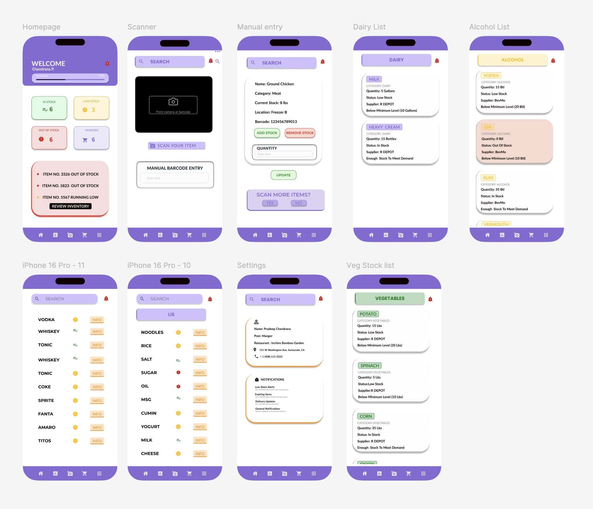

A streamlined inventory management solution that eliminates human error,
automates ordering, and keeps restaurant operations running without shortages.

Inventory App — Created by Garima in Figma
01
Project Overview
This innovative app addresses the challenges workers face in efficiently
ordering and organizing inventory. It simplifies everyday inventory tasks —
from addition to deduction to procurement — for seamless business operations.
The Problem
Recurrent inventory shortages and oversight in placing timely orders
burden managers with frequent trips for minor essentials, disrupting
restaurant operations.
The Goal
Bridge existing gaps and facilitate a continuous flow of inventory
within the restaurant, ensuring perpetual stock availability without
encountering shortages.
Responsibilities
Paper & digital wireframing, hi-fi and lo-fi prototyping,
user interviews, usability studies, and accessibility-informed
design iterations.
02
Understanding the User
User research focused on people who deal with daily inventory tasks —
primarily managers and owners of restaurants. Interviews revealed their
pain points and helped determine whether the inventory process could be
fully automated through the app.
Pain Points
Time
Counting and ordering inventory is very time-consuming and tedious
work that pulls managers away from other responsibilities.
Human Error
People miss items, forget to count, or forget to order — impacting
the restaurant and hindering smooth operations.
Not Inclusive
Existing apps are mainly focused on warehouses and large numbers,
not helpful for small-scale restaurant inventory needs.
User Personas
Sugam Pokhrel
Restaurant Manager
Problem Statement: Sugam is a restaurant manager who needs to
efficiently manage inventory because if he does not, the restaurant might not
run smoothly.
Goals
Manage restaurant inventory more efficiently
Track ins and outs of inventory easily with less hassle
Frustrations
“Most of the time, I have trouble getting in all the inventory at once because we are humans and we forget sometimes.”
“My employees may not coordinate with each other and overorder or underorder.”
Sandra Smith
Senior Manager (Multi-location)
Problem Statement: Sandra is a senior manager who needs to get
items to all the restaurants because if not, she has to express ship, which is
expensive and hectic.
Goals
Coordinate with all branches for smooth operations
Keep track of all restaurants’ invoices and expenses
Lay out a system feasible for all employees to efficiently order inventory
Frustrations
“I have a hard time coordinating with all the restaurants to order inventory regulated by the corporation.”
“Miscommunications lead to shortage of some items and that is hectic.”
03
User Journey Maps
Sugam Pokhrel — Managing Inventory
Note: The task of managing inventory is not difficult, but human errors make it challenging.
Sugam Pokhrel’s journey managing restaurant inventory, showing feelings and improvement opportunities at each stage.
Stage
Look at inventory
Make a list
Order items
Verify receipt
Organize
Feelings
Confused, Bored
Anticipation, Angry
Confused, Relieved
Agitation, Curious
Disappointed, Optimistic
Improvement
Coordinate with employees
Create list with all items
Easy access to all items
Organized activity
Well-organized storage
Sandra Smith — Managing Inventory Across 15 Restaurants
Note: Communication — which is not always perfect — is key across all locations.
Sandra Smith’s journey managing inventory across 15 restaurants, showing feelings and opportunities at each stage.
Stage
List all restaurants
Receive orders
Prepare orders
Send orders
Confirm receipt
Feelings
Relaxed, Concentrated
Annoyance, Anticipation
Confusion, Overwhelmed
Relaxed, Anxious
Relieved, Satisfied
Opportunities
Have a pre-made list
One channel for all orders
Automated comparison with inventory
Track shipment status
Easy manager communication
04
Starting the Design
Paper wireframes — rapid ideation of core flows
Digital wireframes — structured layouts in Figma
Low-fidelity prototype — tested primary user flows
Inventory App Homepage — High-fidelity design in Figma
06
Going Forward
“This will make my life a lot easier and save a lot of time.”
What I Learned
I learned about the Gestalt principle while designing the inventory app.
I put myself in the users’ shoes most of the time to make the design more
interesting, interactive, and easy to use. Understanding how proximity,
similarity, and continuity guide attention helped me create layouts that
felt instinctive rather than learned.
Next Steps
Conduct another round of usability study focused on the scanner page — the core feature
Consult with a back-end developer to determine real-world technical requirements
Add more features and animations for richer visual feedback
Add alt text across all screens for assistive technology users